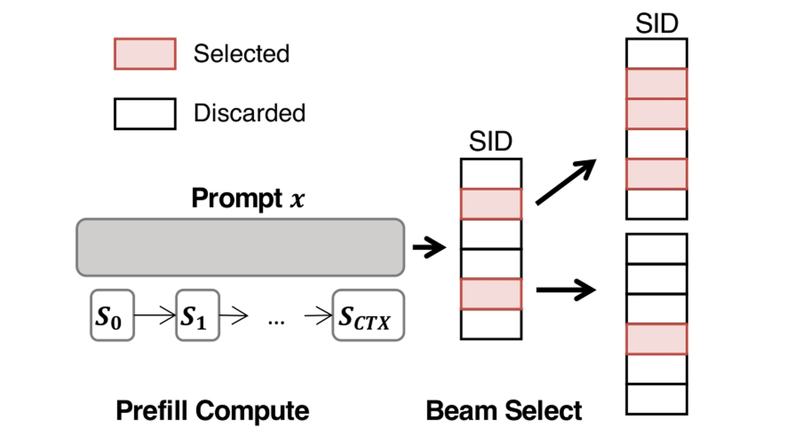
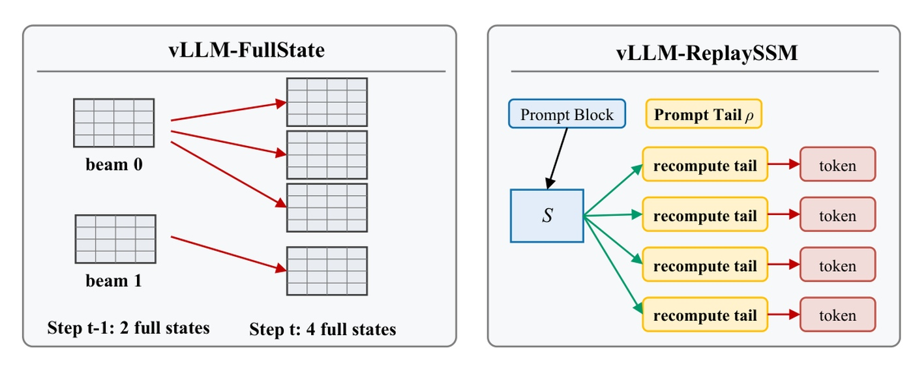
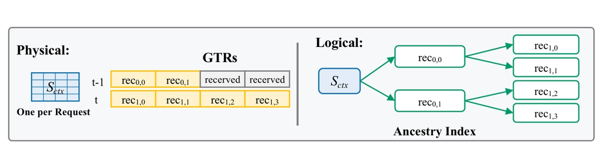
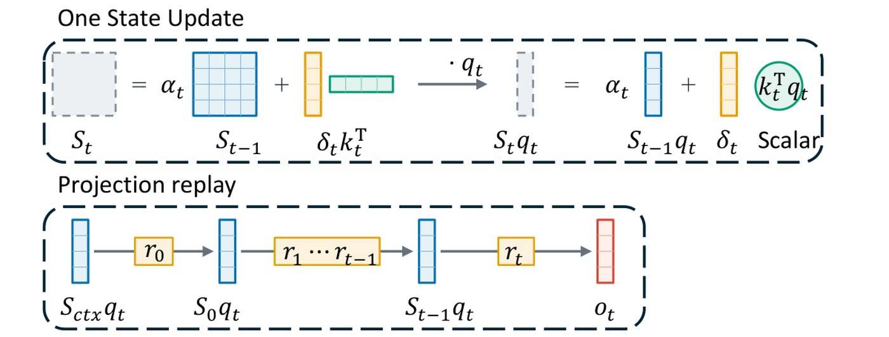
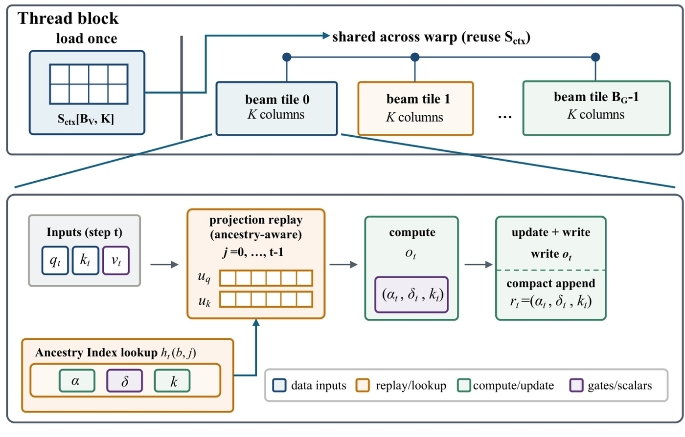
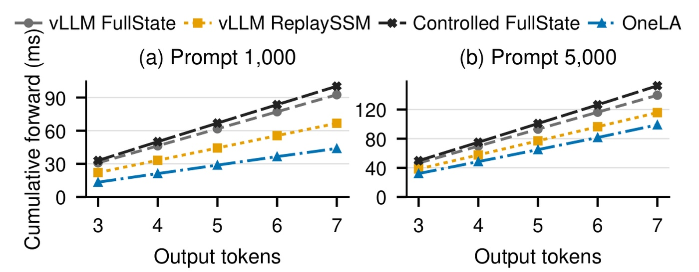
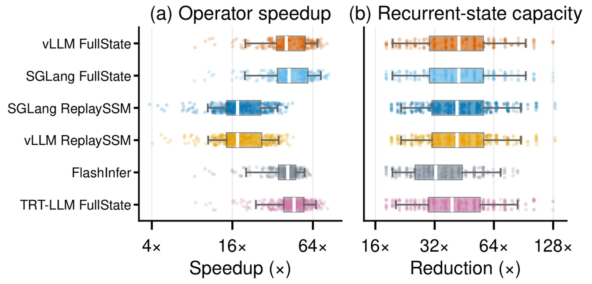
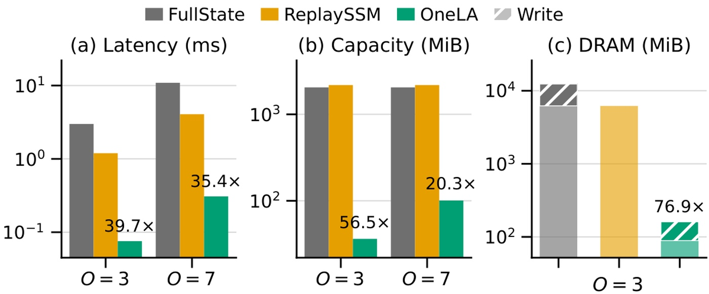

OneLA：面向生成式推荐大束宽解码的线性注意力状态共享
《OneLA: Scaling Linear-Attention Decoding to Large Beams in Generative Recommendation》研究生成式推荐中大规模 beam 解码的状态管理。论文由香港大学的 Xiangrui Yang 与快手的 Cheng Peng 共同一作，合作机构包括北京大学，Jiaqiang Liu 与 Yiming Qiu 为通讯作者。论文于 2026 年 9 月 11 日提交 arXiv，本文记录日期为 2026 年 9 月 15 日。论文入口。原文未发现独立代码入口。它提出的 OneLA 用共享提示状态、紧凑转移记录和祖先索引完成 Gated DeltaNet 解码，研究重点是执行效率与数值一致性。
生成式推荐需要通过大束宽解码产生数百个候选物品，但现有线性注意力执行路径会为每条分支保存完整递归状态，或反复重放共享历史，造成显著的存储与数据搬运开销。候选分支明明共享同一段长提示、只在很短的生成后缀上分歧，如何利用这种结构避免重复状态物化，是本文要解决的问题。
1. 背景和问题
1.1 SID候选生成为何需要大束宽
生成式推荐把物品编码成一小串离散语义标识，即 SID。模型根据用户历史等提示，自回归地产生标识序列，完整序列再映射回物品。这样一来，候选召回可以被写成序列生成问题，语义和协同信息则由物品标识的构造与模型学习承载。OneLA 接受这条建模链路，并不重新设计物品编码，也不改变推荐目标；它关注的是同一个请求要同时探索大量候选标识序列时，线性注意力如何执行。传统文本生成常以一条输出为目标，而推荐召回需要数百个候选，这使束宽成为必须认真处理的规模维度。
符号解释：$\mathbf{x}$ 为输入提示，$\mathbf{s}_i$ 为物品 $i$ 的完整 SID 序列，$s_i^t$ 为其中第 $t$ 个标识，$\mathbf{s}_i^{<t}$ 为之前已经生成的标识，$T$ 在这里表示标识序列长度，$P$ 为模型条件概率。该式对应原文背景中的自回归分解，解释候选分支为何拥有相同提示、不同短后缀；实验部分会另外定义实际 decode 调用数，不能把两处长度符号混用。

Figure 1 左侧先沿提示计算递归状态，直到得到提示结束处的上下文状态；右侧则进入候选标识扩展与选择。红色框代表保留的候选，白色框表示被丢弃的候选。重要的是，这些候选不是从头处理各自一套用户历史：它们来自同一请求，只是从某个输出位置开始分叉。每步扩展之后，全局选择可以留下同一父分支的多个孩子，也可以让另一个父分支完全消失。因此逻辑上的第几条 beam 并不是一条具有固定身份、从始至终占用同一状态槽的序列。图中的箭头揭示了这种动态父子关系，后续系统若直接把大矩阵绑定在当前 beam 编号上，就会随着选择而搬动数据。
图中的提示阶段还解释了为什么短输出仍然可能是昂贵工作负载。需要生成的 SID 位数很少，并不意味着前面用户历史也很短；论文强调提示长度和束宽都远大于输出后缀长度。读入长提示的成本可以通过共享摊薄，分歧之后每一步的成本则会被大量候选放大。这个不对称结构为 OneLA 提供了机会：既然各分支之间只有很少几次不同的更新，就不一定需要给每条分支保存一个完整的历史摘要矩阵。这里的图是任务结构示意，不能据此推出更大束宽一定提高业务收益，本文也没有测量这种收益曲线。
1.2 状态管理瓶颈从序列长度转向束宽
传统注意力处理长序列时，计算与缓存随序列增长；递归线性注意力则把历史压进固定形状的状态。对单条序列而言，固定大小很有吸引力，但固定不等于很小，更不等于多个分支之间已经共享。GDN 每个头保存一个由 value 维和 key 维共同决定的矩阵。在推荐大束宽场景下，如果每个活跃分支都拥有独立矩阵，状态容量就被束宽乘大；每一步还要读旧状态、算更新、写新状态。即使提示不再增长，这些矩阵的重复读写仍会持续占用显存带宽。论文的切入点正是把这种与束宽相关的成本从“线性注意力已经解决长序列”的直觉中单独拆出来。

Figure 2 左侧展示 FullState 的父子扩展：前一步两份完整状态，下一步有四个保留孩子，状态物化数量随孩子数增长。三个红箭头来自同一个父分支，说明重复父节点并不罕见；它们对前缀的需要相同，却要承接独立状态。图中网格表示完整矩阵，并非逐 token 的 KV 条目，因此普通 KV 缓存分页的直觉不能直接消除这里的复制。右侧的 ReplaySSM 试图通过检查点和重放节约常驻状态，但提示检查点落在完整块边界，未覆盖的提示尾部还要重算。多条候选被当成独立请求后，各自加载检查点，再各自执行黄色的尾部重算路径，公共工作便重复出现。
这两条路径分别暴露“存下来太多”和“重新算时重复太多”的问题。右图中的重放并不是 OneLA 所说的短分歧转移重放：它可能包含较长的提示尾部，而且没有跨当前候选保留共享的历史结构。原文据其评测实现描述 vLLM 的原生端到端 GDN beam 支持，其他系统则提供可比较的算子路径。这个框架支持范围应按论文评测时期理解，不能作为未来版本的永久能力清单。就本文问题本身而言，无论路径来自哪个框架，只要逻辑分支仍然直接拥有物理完整状态，剪枝、重新排序和一父多子就会继续引发复制、重建或者重算。
把所有分支指向同一个可写矩阵也无法解决问题。不同后缀确实会改变递归状态，后续查询应读到自己的历史，强行覆盖共享矩阵会串扰候选。可共享的对象是已经共同完成的提示状态，必须单独表达的对象则是分叉之后的更新。原文进一步指出，beam 选择只改变“保留哪条路径”，不会修改已经发生的历史更新。由此可以把数据的不可变性与逻辑选择的可变性分离：旧记录保持原位，当前路径只维护指向旧记录的索引。这也是后面祖先表存在的原因，而非额外的推荐建模模块。
1.3 本文要保留什么、改变什么
OneLA 试图保留原始 GDN 数学计算和既有候选选择语义，改变状态表示与 GPU 执行方式。一个候选分支不需要随时提供整个历史矩阵，它在当前更新中实际上只查询矩阵沿当前键和查询的投影。如果能准确计算这两项，就可以得到当前增量和输出。这个观察比单纯压缩矩阵更强：不只是缩小缓存，还取消了后缀完整矩阵这一中间产物。与此同时，重放也有成本，短 SID 后缀约束才让这笔交换值得考虑；不能因为单条记录很小，就认为记录数量增长没有代价。
因此本篇与推荐系统的直接关系在于服务大量候选的解码执行，而与大模型的关系在于混合注意力模型中 GDN 层的执行优化。它没有引入新的训练损失、用户表示或偏好信号，也没有比较召回率、点击率或者转化率。判断它是否成功，需要分别回答三个问题：数值计算是否与完整状态足够一致，算子是否减少状态容量和流量，以及这项局部优化能否传递到完整模型的 GPU 前向时间。只有把这些层次分开，才能理解后文为什么算子有数十倍变化，而完整模型仅报告约一至两倍以上的加速比。
2. 方法
2.1 共享上下文与紧凑转移记录
原文先按单个请求、单个 GDN 头解释设计。提示预填充得到 $S_{\mathrm{ctx}}$，同一请求的所有 beam 共用这一个起点；不同请求不能因为形状相同而共享数值状态。概念上每条 beam 仍有自己的 $S_{t,b}$，但 OneLA 不把这个矩阵实际写进存储。它把状态分成一个提示矩阵和一串分支转移记录，每条记录只在产生时追加一次。这是存储形式的改变，不需要再训练模型来适应另一种隐藏表示。

Figure 3 的左半部分是物理存储：蓝色矩阵每请求只有一份，黄色格子按解码步和槽位保存转移记录，灰色格子为保留空间。右半部分是逻辑树，同一个早期记录可以连到多个后继记录。这一左右对照不能读成两个重复的状态树，右边表达的是引用关系，左边才是实际保留的数据。前一步的记录既然已经确定，就不需要因为下一步选出更多孩子而复制多份；孩子只要记住自己从哪个物理槽继承历史。提示状态也不会在每次分叉时再次持久化，而是作为所有路径共同的根。
图中分层记录还提示了一个边界：OneLA 消除的是每条 beam 的完整矩阵持久化，并没有消除后缀历史。每生成一步，都有新的紧凑记录进入存储；当输出变长时，这部分会累积，重放也会变深。它依赖生成式推荐后缀短这一结构，不能把图上的几个格子理解成任意长度下的常数内存。另一个容易忽视的细节是，逻辑树中可能重复引用同一个记录，但记录自身不可变；如果实现将当前修正量写回祖先记录，就会破坏兄弟分支的语义。图的作用因此不仅是说明节省空间，还界定了哪些数据可以共享、哪些更新必须追加，以及哪些变化只能发生在索引层。具体看右侧，上层零号记录同时通向下一层零号与一号记录；这两条路径都读取同一份祖先增量，却各自追加新的增量。左侧因此只需要保存上层零号格一次。共享发生在共同历史上，两个孩子的当前记录没有被合并，这保证了存储去重与候选分歧可以同时存在。该表示之所以可行，来自 GDN 原始递推。论文式（1）写为：
符号解释：$S_t\in\mathbb{R}^{d_v\times d_k}$ 是更新后的状态，$q_t,k_t\in\mathbb{R}^{d_k}$ 是当前查询与键，$v_t\in\mathbb{R}^{d_v}$ 是当前值，$\alpha_t$ 控制旧状态衰减，$\beta_t$ 控制修正强度，$o_t$ 为输出，$\top$ 表示转置。旧状态先衰减，再根据当前值与状态键投影的差进行修正；输出则从更新后的状态沿当前查询读出。把已计算的修正向量记下来，就得到原文式（2）的 GTR：
符号解释：$\delta_t$ 是已经包含父状态影响的 $d_v$ 维修正向量，$r_t$ 是当前转移记录，其余符号沿用上式；$\delta_tk_t^\top$ 是一个 rank-one 外积增量。这个增量不是对完整矩阵做低秩近似的结果，而是原始更新本来就有的外积结构。存储修正后的 $\delta_t$ 是关键：若只存门控和值，重放时仍要重新求它们依赖的父状态，便失去了避免矩阵重建的目的。
符号解释：$C$ 表示状态元素数量的量级，$W$ 为活跃束宽，$d_v,d_k$ 为值与键维度，$\Theta$ 和 $O$ 描述渐近规模。左式是一个请求一个头的全部活跃完整状态，右式仅是单次转移的记录量，两者统计范围不同。计算 OneLA 总容量还需加入共享矩阵、所有保留转移和祖先元数据，不能把右式直接当成整个请求的常数成本。
2.2 双投影重放
有了记录，最直观的实现是按记录重建当前矩阵，但这会重新制造昂贵中间量。OneLA 改为固定当前 token 的查询与键，沿自身祖先链把历史更新直接作用到两个向量累加器上。重放的对象是当前需要的状态投影，而不是每个历史时刻的完整状态矩阵。

Figure 4 上半部分先画完整状态的一次更新，再对等式两侧右乘当前查询。原本由修正向量和历史键形成的外积，在右乘之后变成“修正向量乘一个内积标量”。这是省掉矩阵的代数基础：向量累加器只保留当前读出方向所需要的信息，而当前方向在整条重放链中固定。下半部分从共享提示对当前查询的投影出发，依次经过记录零、后续祖先记录和当前记录，最后得到输出。图只画查询方向，更新修正量所需的键方向按同样的递推执行，两条投影都不能缺。
沿祖先路径重放与按物理槽从前到后扫描不是同一回事。每个深度必须使用属于当前 beam 的历史记录，否则得到的是其他候选路径的投影。当前查询也不能换成历史查询，因为我们要的是历史状态对“现在这个方向”的作用。记录内已经含有当时计算好的修正量，当前重放只需计算历史键与当前查询或键的内积，乘修正向量并叠加衰减。这样既保留原 GDN 的状态依赖，又把每个历史转移的处理降到向量层面。这里不存在历史信息被主动裁去的近似，但浮点执行顺序改变仍可能产生误差，需要实验核验，不能仅凭代数恒等式宣称逐比特完全一致。图中每个黄色记录框对应一次向量更新，所需内积在键维完成，而修正累加发生在值维；两者都没有重新展开成值维乘键维的大矩阵。与此同时，蓝色起始投影仍来自共享矩阵与当前方向的乘积，OneLA 并没有连这一步也免除，而是通过后续内核让多条分支复用它所读取的提示矩阵块。把原文式（3）的两条递推合写为：
符号解释：$z_t$ 分别取当前查询 $q_t$ 和当前键 $k_t$，$u_z^{(j)}$ 为重放到祖先深度 $j$ 后的向量累加器，初值编号 $-1$ 对应共享提示；$\alpha_j,\delta_j,k_j$ 来自该 beam 在深度 $j$ 的历史 GTR。每一步先衰减已有投影，再加入当前方向上的历史修正。式中两处累加器都记作拉丁字母 $u$，不是新的矩阵状态。完成历史重放后，原文式（4）直接得到当前修正和输出：
符号解释：$u_k^{(t-1)}=S_{t-1}k_t$，$u_q^{(t-1)}=S_{t-1}q_t$，分别是历史状态的当前键投影和查询投影；$\delta_t$ 用于追加当前记录，$o_t$ 送往后续模型计算。每条 beam 每个值头只需要两个 $d_v$ 维累加器，历史矩阵不必出现。当前值、门控和向量仍由原模型产生，本模块只重排已有计算，没有另外的学习目标。
2.3 动态beam祖先索引
投影重放需要正确顺序的记录，祖先索引负责把动态 beam 选择翻译成物理读取位置。令父映射给出当前孩子来自上一步哪条分支，原文式（5）为：
符号解释：$b$ 为当前 beam，$t$ 为当前解码步，$j$ 为历史深度，$\pi_t(b)$ 是该 beam 的父分支编号，$h_t(b,j)$ 返回祖先路径在深度 $j$ 的物理记录槽。更早的索引从父分支继承，最近一步加入父分支所在槽；读记录时还结合深度定位 $r_{j,h_t(b,j)}$，不能把槽号当作跨所有解码步唯一的编号。
这一规则覆盖三种选择行为。剪枝只丢弃引用，重新排序只改变引用次序，一父多子则重复轻量索引而不复制完整 GTR 链。新记录写到当前步的物理槽后保持不可变，因此祖先路径的逻辑变动不会迫使历史数据搬家。它不是把重排操作整体删除，索引更新依然存在；节约来自被重排对象由矩阵或记录链变成更小的元数据。对于固定短后缀，索引表较浅，这与向量重放的设计互相配合。若做长期生成，索引增长和历史记录生命周期管理都要重新评估。
2.4 融合共享上下文内核
仅在数据结构上共享提示矩阵还不够。若每条 beam 各自启动内核，把同一矩阵从 HBM 再读一遍，带宽收益会被重复读取吞掉。原文因此把共享上下文投影、按祖先取记录、双向量重放和当前更新融合执行。

Figure 5 上半部分把一个线程块分配给值维的一块行区域以及一组 beam。左侧对应的提示矩阵块只加载一次，在这个线程块内供多个 beam tile 复用；图中横向连线表达的是片上共享，而非给每个 tile 分配一份新的 HBM 状态。下半部分从当前查询、键、值进入投影重放，祖先索引查找为它提供每一步所需的衰减、修正向量和键。重放完成后直接计算输出与当前 GTR，右侧写输出并追加紧凑记录。底部图例区分数据输入、查找重放、计算更新以及门控标量，展示了内核内信息如何衔接。
这个内核同时照顾读取与写入两端。共享提示的块在多个 beam 之间复用，减少重复读取；两个累加器在片上更新，避免为重放过程写中间矩阵；最后仅写输出和当前记录，免去每 beam 完整状态回写。融合的意义因此不是笼统地减少调用次数，而是维持“完整状态不物化”的表示约束直到执行结束。若把上述步骤拆成中间投影落 HBM 的流水线，虽然数学仍正确，实际流量却可能不同。图中每个块只承载一部分值维，说明实现还要在片上资源、分组复用和并行度之间选择；论文没有给出任意块大小都最优的证明。可验证的主张是，在被评测工作负载和实现下，这些组合设计使状态容量与实际 DRAM 流量同时下降。更具体地说，共享起点的加载发生在一组候选共同工作的线程块范围，不能理解成整块设备只读一次矩阵；不同值维块仍需各自处理负责的行。祖先记录读取也仍然存在，消除的是历史完整矩阵的物化和回写。这两个执行范围决定了应如何解释带宽收益：它来自可复用部分的摊薄与写入对象缩小，而不是所有历史数据访问归零。
3. 实验结果
3.1 工作负载、比较对象与计时口径
全文的实验是系统效率评测，没有推荐数据集上的准确率主表。全模型使用 0.8B Qwen3.5，包含六个全注意力层和十八个 GDN 层；请求数固定为四，逻辑束宽为二百五十六，提示长度取一千和五千 token，总输出取三到七个 token。预填充阶段已经选择第一个输出，所以真正调用 decode 的次数比总输出少一次。这个细节决定了重放深度，若误把总输出当成调用次数，既会错误估计记录数量，也会错读不同端点的容量。
符号解释：$O$ 是总输出 token 数，$T$ 在实验章专指预填充之后的 decode 调用数；第一 token 由预填充选择。本文验证的是短输出区间，不是任意长生成。上式沿用原文实验口径，与背景的 SID 长度符号通过语境区分。
算子测试进一步覆盖四百零五种形状，请求数为四、八、十六，束宽为一百二十八、二百五十六、五百一十二，decode 次数为二到六，并结合九种递归几何配置。键头数范围为四到三十二，值头数为四到六十四，键维为一百二十八到二百五十六，值维为一百二十八到五百一十二。每条基线只在自身原生支持的形状上做配对，输入以及重排、复制的祖先关系保持一致。因而六种基线的总体分布未必来自完全同一个形状集合，不能仅看箱线图中位数就做跨框架绝对优劣排名。
论文引用了所用服务框架，并在 TensorRT-LLM 参考条目中给出评测标签；但本版方法学没有充分展开硬件型号、全部精度与调优参数、每个测量的重复次数等复现实验细节。这里按原文报告数值解读，不补写未给出的设备或置信区间。图中箱体的四分位范围属于跨工作负载分布，并非同一配置多次测量的统计置信区间，这两个含义也需要分清。
3.2 全模型GPU前向

Figure 6 横轴是总输出 token 数，纵轴是累计完整模型 decode-forward GPU 毫秒数，左右面板分别是提示长度一千和五千。灰色圆点为原生 vLLM FullState，黄色方点为原生 ReplaySSM，黑色叉号为受控 FullState，蓝色三角为 OneLA。蓝线在被测点均低于两条原生参考路径，表明局部 GDN 优化确实能传到完整模型，而没有完全被其余模型计算抵消。但这张图的测量对象写得很明确：完整模型的解码前向 GPU 时间。摘要和结论使用的端到端措辞应据此限定，不能扩写成包含预填充、服务排队、CPU 调度、网络或整个推荐链路的请求时延。
受控 FullState 与 OneLA 使用同一解码管线，区别是仍保留传统逐 beam 完整状态执行；它与原生 vLLM FullState 的差距在百分之六点九至九点三内。这个对照意在说明管线重写没有凭空构造一个完全不同的慢基线。替换其递归状态计算后，论文报告跨提示和输出长度的累计前向加速为一点五四至二点四六倍。这里的倍数是旧时间除新时间，不是延迟下降了百分之一百五十四。由于原文没有逐点列出完整数值表，本文保留其区间与曲线趋势，不从图上估读小数并冒充精确测量。
长提示面板的蓝线随输出增加也明显上升，提示共享并不意味着整个模型不再付出上下文相关成本。模型中仍有全注意力层以及其他算子，OneLA 仅替换 GDN 状态路径。图六因此同时提供成功与范围约束：它证明被测混合架构能受益，却没有证明所有层都采用这种结构时仍有同样倍数，也没有量化更大模型、不同注意力层比例和不同服务器调度下的效果。受控实验是有价值的系统对照，但不足以等同于生产服务的尾延迟测量，尤其不能进一步推出候选质量、点击率或营收变化。
3.3 算子广度与数值精度

Figure 7 每一行对应一种基线，左图的横轴为基线延迟除以 OneLA 延迟，右图为基线持久递归状态容量除以 OneLA 容量，数值越大表示相对收益越大。两图使用倍数刻度，箱体展示中位数与四分位范围，须线覆盖第五至第九十五百分位。散点和箱体呈现的是多个配对工作负载，不是一个默认配置反复运行的波动。因此图中不同宽度、不同头配置所带来的变化本身就是被测内容，而不是应被压成单一宣传数字的噪声。
按原文给出的配对中位数，OneLA 相对 vLLM、SGLang FullState 的算子速度分别为四十点五倍、四十二点五倍，相对两条 ReplaySSM 路径都是十七点五倍，相对 FlashInfer 和 TensorRT-LLM 分别为四十一点五倍、四十六点三倍。右图另一个易混数字是：持久递归状态容量的中位减少倍数最高为四十二点五倍。后者只统计该类状态，并不是模型权重、激活、全注意力 KV 和框架预留显存合计减少四十二点五倍。两个四十二点五分别出现在速度和容量语境，引用时必须带上指标和比较对象。
原文还单独报告较大 Qwen 几何配置：请求十六、束宽五百一十二、键头和值头均十六、键值维均一百二十八。在总输出三和七时，OneLA 分别用零点二一二毫秒、零点九九零毫秒，对支持这一形状的四条基线形成十六点零至五十六点五倍速度比。它展示规模上去以后优势仍存在，但不能把该点当成四百零五种配置的统一速度。所有配置对 FP32 FullState 的最大绝对输出误差为 $4.88\times10^{-4}$，这是数值正确性的直接证据，尤其与本文采用不同计算顺序有关。
最大绝对误差较小仍不等于完整推荐排序完全一致。该指标针对算子输出，在接近决策边界时误差如何影响最终候选，论文没有额外报告 SID 一致率或 top-k 排序翻转率；更没有在线业务验证。这里合理的结论是，在测试输入与祖先重排场景下，向量重放保持了较好的数值一致性。工程复现还应检查输入幅度、数据类型、门控衰减和更长后缀，因为同一绝对误差阈值对不同尺度输出的含义可能不同。后面这些是复核建议，并不是原文已经做完的鲁棒性实验。
3.4 状态路径与流量归因

Figure 8 固定 Qwen 几何配置、四个请求和五百一十二束宽，分别展示完整递归状态路径的延迟、持久容量以及物理 DRAM 流量。左图包括显式 beam 状态维护，两个端点为总输出三和七。OneLA 分别为零点零七五五与零点三零八毫秒，vLLM ReplaySSM 为一点二零与四点零六毫秒，vLLM FullState 为三点零零与十点九毫秒；相对 FullState 的速度比分别是三十九点七与三十五点四。这里是递归路径，不能与图六完整模型的累计时间混在同一张性能排行榜里，两个统计范围差别很大。
中图显示 OneLA 的持久状态容量为三十六点三和一百零一 MiB，相对 FullState 分别减少五十六点五和二十点三倍。输出更长后，容量增加、减少倍数下降，正好符合 GTR 逐步追加的机制。论文同时给出逻辑状态写入量为三十二点三和九十六点八 MiB，两个端点相对 FullState 都减少一百二十七倍。容量是保留多少，写入量是过程写了多少；它们虽然单位相同，却不是可以互换的指标。共享提示矩阵仍要常驻，而每步主要追加向量记录，可以解释二者为什么出现不同的减少倍数。
右图只给出总输出三时的物理 DRAM 数据量，OneLA 为一百六十一 MiB，相对 FullState 和 ReplaySSM 分别减少七十六点九与三十九点九倍。斜线纹理标识写流量部分，横轴并没有总输出七的另一个测点，因此不能声称原图验证了两个端点同等的物理流量收益。原文报告对应算术强度为四十点零 FLOP/byte，分别是两条参考路径的四十五点六和二十点六倍。这支持跨 beam 复用与紧凑回写减少带宽压力的解释，但不能简单说内核运算次数减少了同样倍数：算术强度本身描述的是运算与搬运之比，适量增加计算换掉重复搬运也可能使其提高。
3.5 哪些机制已经归因、哪些实验仍缺失
论文的证据链从图六的模型前向、图七的算子形状覆盖走到图八的状态与流量拆解，层次较清楚。不过，图八是路径层面的效率分析，并没有把“去掉祖先索引”“关闭跨 beam 共享”“取消内核融合”“改存门控和值”分别构造成独立消融。因此它支持总体设计的解释，尚不能定量分配四个组件各占多少速度收益。受控 FullState 有助于隔离总体状态方案差异，也不等同于逐模块消融。八张图全部在主文，原文没有独立实验表、质量表或附录对象可补充这些缺口。
其他范围也应如实保留：全模型只展示一个规模与一种层配置，算子广度主要来自请求数、束宽、长度和头几何变化；没有公布任意长生成曲线、变长真实流量下的服务级尾延迟或推荐质量指标。论文明确利用短后缀做计算换内存，后缀长度扩大后重放深度增加，收益是否收敛甚至反转需要重新测量。将它称为适合短 SID 大束宽的 GDN 执行方案有充分原文支撑，将它称为通用长文本解码加速器或已经带来在线点击提升则超出证据。
4. 总结
4.1 我的判断
我认为 OneLA 最值得保留的设计经验，是先问下游真正读取状态的哪些信息，再决定需要保存什么。GDN 的更新虽然定义在矩阵上，当前 token 消费历史却只通过两个投影。利用这一结构，状态表示从每 beam 一份矩阵变为共享根状态加祖先转移，执行也从矩阵重建变为向量重放。这里的低秩来自原更新而非额外拟合，因而可以通过严格代数关系解释，再用浮点误差实验验证。它是针对既有算子的系统重组，不依赖另外训练一个更准的模型，这使收益来源相对容易定位。
同时，不能只记住“共享”两个字。只有请求内提示状态相同、旧转移不可变、当前路径可被索引准确追踪，而且短后缀使重放成本可控，这些条件一起成立，才形成本文方案。对推荐召回而言，这些条件与短 SID 和大候选集合自然契合；对长文本、复杂分支恢复或持续会话，条件会变化。我的判断是应把它作为有清晰适用域的执行模式，优先在相近工作负载复现，而不是先假设它能替换所有递归注意力状态管理。
4.2 工程复核应从哪些环节开始
第一步应做状态语义测试。构造包含剪枝、重排、一父多子的确定性父映射，对每个解码步比较完整状态参考与投影重放输出，并检查兄弟分支追加记录后不会污染祖先。这样能分辨公式实现错误和索引错误，比只看最终一次误差更容易定位问题。第二步应独立记录常驻状态、逻辑写入和设备物理流量，避免把总显存下降归因于某个局部缓冲，或者把逻辑字节数当成实际 DRAM 字节数。第三步才是嵌入完整混合模型，以一致的 decode 管线比较前向时间，并另测包含预填充、调度和候选选择的请求级延迟；这些新增测量能够回答论文尚未覆盖的部署问题。
后续跟进可以围绕三个具体实验推进：扩展输出长度，寻找向量重放相对 FullState 的交叉点，因为 GTR 和祖先链都会随深度增长；改变全注意力与 GDN 层比例，观察局部优化传递到全模型的程度，因为图六只有一种混合比例；检查候选标识和最终 top-k 一致率，尤其关注低间隔候选，因为小幅输出误差未必保证离散选择完全不变。它们分别检验性能适用域、模型结构依赖与业务接口语义，不能由现有速度区间代替。
4.3 局限与阅读时必须保留的边界
本版至少有五项边界需要随笔记一起保留。其一，所有长度收益建立在总输出三到七的短生成测试上，长后缀可能增加容量和重放成本。其二，全模型证据来自零点八十亿参数、六个全注意力层加十八个 GDN 层，无法覆盖其他架构比例。其三，主要速度口径是 GPU decode-forward，缺少完整服务链路和尾延迟证据。其四，误差测试针对算子输出，没有在线 CTR、召回质量或生成质量提升证据。其五，缺少独立逐组件消融及充分展开的环境和调优细节，影响收益拆分和精确复现。写清这些限制不会削弱它对状态组织的贡献，而是帮助使用者判断自己的工作负载是否真的落在被验证范围内。
目前最稳妥的结论是：OneLA 在被测大束宽、短后缀 GDN 解码中，通过共享提示状态和紧凑祖先更新显著减少了递归状态搬运，并把算子收益传递为一点五四至二点四六倍的完整模型解码前向 GPU 加速。后续应等待可核验实现或更完整复现材料，再检验更长输出与真实服务条件；不能把持久递归状态中位容量减少最高四十二点五倍改写成整机显存降低，也不能把执行加速当成推荐效果提升。